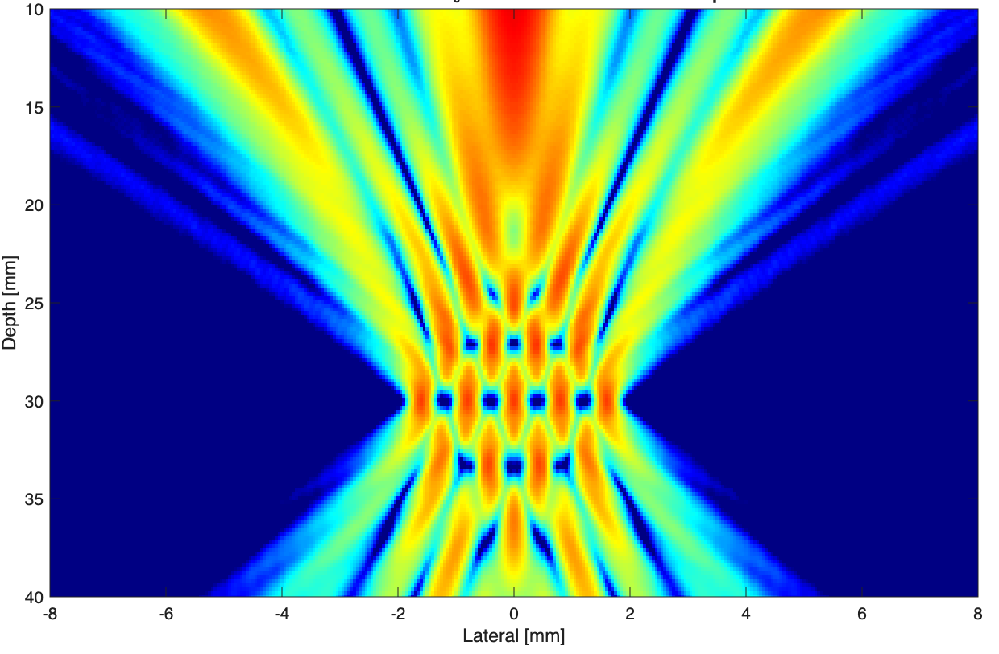
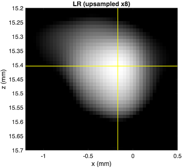
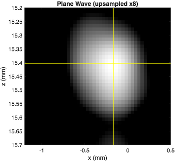
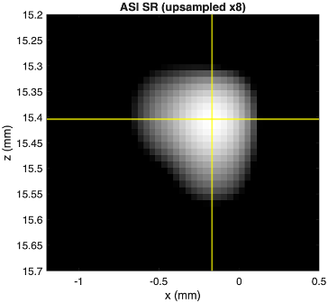
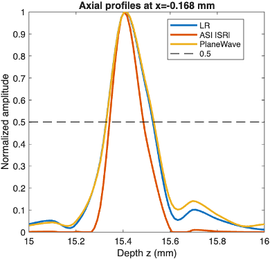
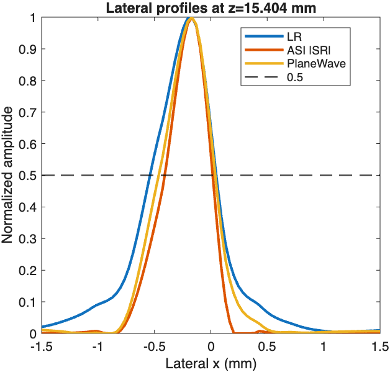

Multi-Beam Acoustic Structured Illumination: Implementation and Evaluation
Overview
Acoustic Structured Illumination (ASI) was investigated as an approach for improving ultrasound image resolution through multi-beam acoustic illumination. I implemented and evaluated multi-beam ASI patterns using established phase-retrieval methods, including the Gerchberg–Saxton and STAR algorithms.
The imaging workflow was investigated through simulation and hardware-based phantom experiments. The resulting images were evaluated using quantitative measures of spatial resolution and compared with plane-wave imaging.
Objective
The objective was to investigate the feasibility of multi-beam Acoustic Structured Illumination for high-resolution ultrasound imaging and evaluate its imaging performance relative to conventional plane-wave imaging.
Approach
1. Multi-Beam ASI Pattern Generation
Implemented multi-beam Acoustic Structured Illumination pattern generation using established phase-retrieval algorithms. Gerchberg–Saxton and STAR-based approaches were evaluated for generating the desired acoustic illumination patterns.
2. Acoustic Field Simulation
Simulated acoustic fields to investigate the generated illumination patterns at different beam separations and imaging depths. The simulated pressure fields were used to examine beam structure and spatial characteristics before hardware validation.
3. Ultrasound Acquisition and Processing
Implemented the ASI imaging workflow using a Verasonics Vantage ultrasound research system. Acquired ultrasound data and processed ultrasound IQ data to generate ASI-based image reconstructions.
4. Comparison with Plane-Wave Imaging
Multi-angle plane-wave imaging was used as a comparison method. Reconstructed images were evaluated under corresponding experimental conditions to assess differences in spatial resolution.
5. Quantitative Evaluation
Imaging performance was evaluated using axial and lateral intensity profiles and Full Width at Half Maximum (FWHM) measurements.
ASI Pattern Generation
Multi-beam acoustic structured illumination patterns were generated using phase-retrieval algorithms and evaluated through acoustic field simulation before experimental imaging.

Experimental Evaluation
The ASI imaging approach was experimentally evaluated using a wire phantom and a Verasonics Vantage ultrasound research system. A 50 μm wire phantom positioned at approximately 15 mm depth was used to evaluate the spatial response.
The experiment compared three imaging conditions: low-resolution imaging, plane-wave imaging, and ASI imaging. Axial and lateral intensity profiles were then extracted from the resulting images to quantitatively compare the spatial response.





Results
For the evaluated phantom condition at approximately 15 mm depth and a beam separation of Δd = 0.48 mm, the ASI reconstruction produced narrower measured axial and lateral responses than the corresponding plane-wave result.
| Metric | Plane Wave | ASI |
|---|---|---|
| Lateral FWHM | 501 μm | 425 μm |
| Axial FWHM | 202 μm | 144 μm |
FWHM (Full Width at Half Maximum) was used as a quantitative measure of spatial resolution. In this evaluation, the smaller FWHM values correspond to narrower spatial responses and improved resolution for the evaluated condition.
My Contribution
-
```
- Implemented multi-beam ASI pattern generation using established phase-retrieval algorithms.
- Implemented simulation workflows for evaluating acoustic illumination patterns.
- Implemented ASI image reconstruction and processing from ultrasound IQ data.
- Conducted phantom-based hardware experiments using a Verasonics Vantage ultrasound research system.
- Extracted axial and lateral intensity profiles from reconstructed images.
- Evaluated spatial resolution using FWHM measurements.
- Compared ASI imaging performance with plane-wave imaging. ```
Tools & Technologies
MATLAB · Verasonics Vantage · Ultrasound Imaging · Acoustic Structured Illumination · Gerchberg–Saxton · STAR · Phase Retrieval · Beamforming · Signal Processing · Phantom Imaging